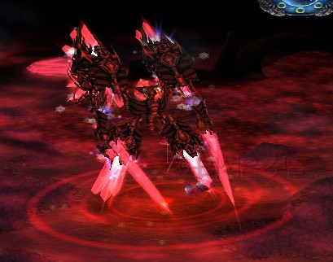

You can hit Flame Nightmare with Q without being seen = no agro.
It means you can make him jump without being seen.
If you dribble, use shortest E possible to stun.
Use your W just before Flame Nightmare lands on target, to absorb as much damage into shield as possible.
If you are helping kiter, use E if he needs it.